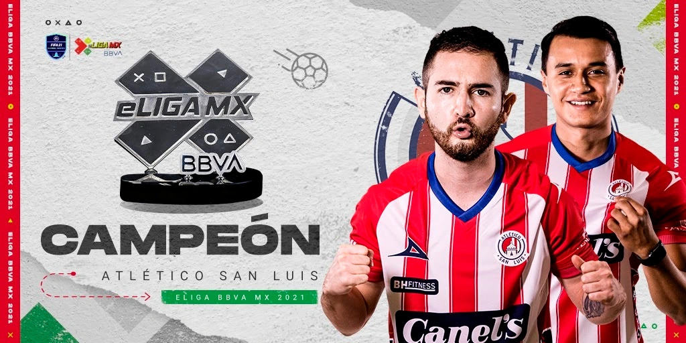
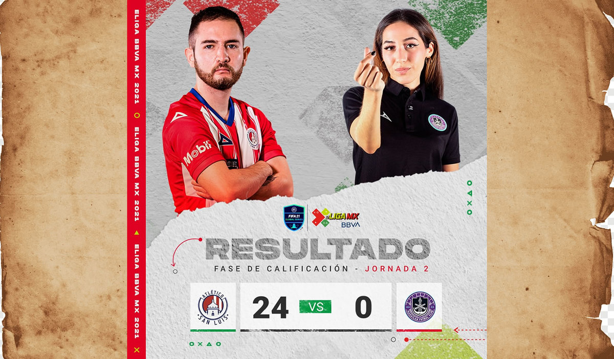
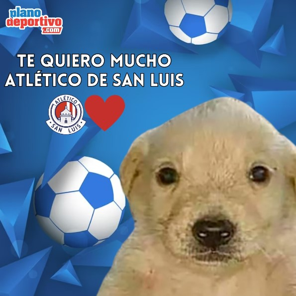
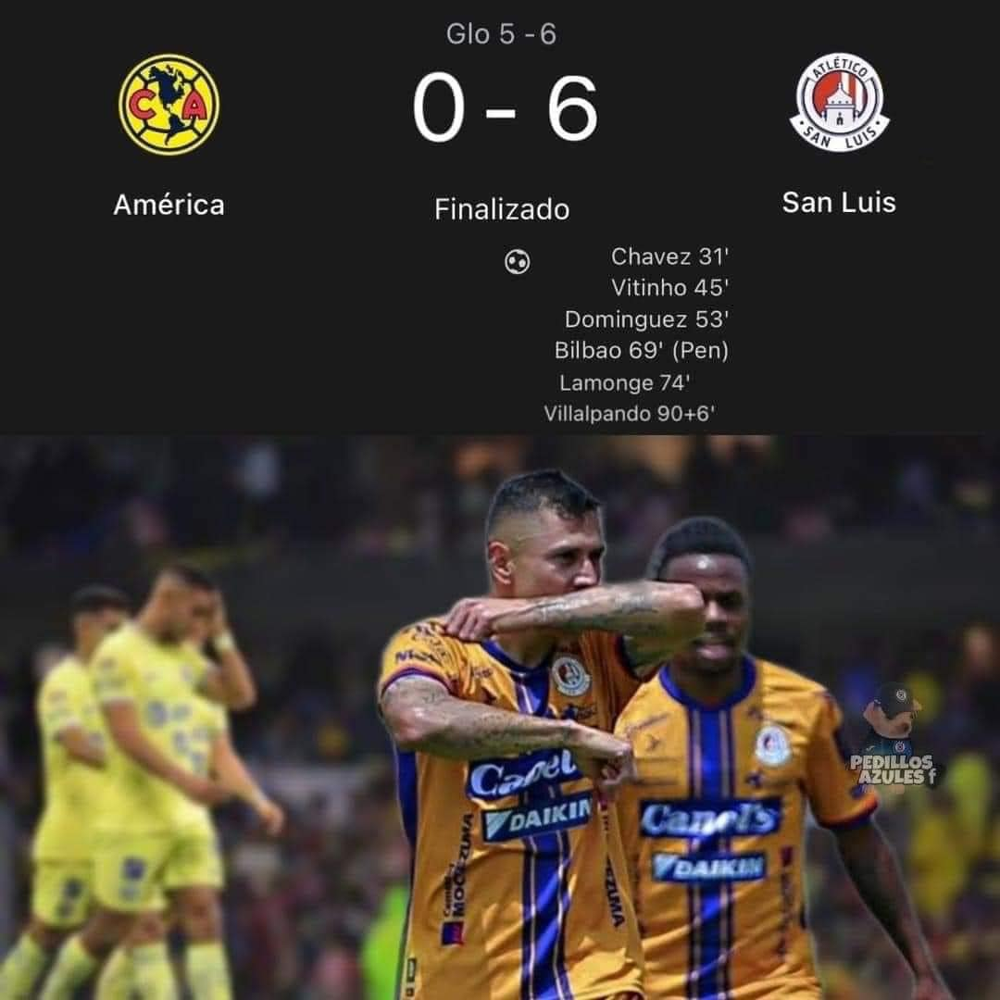
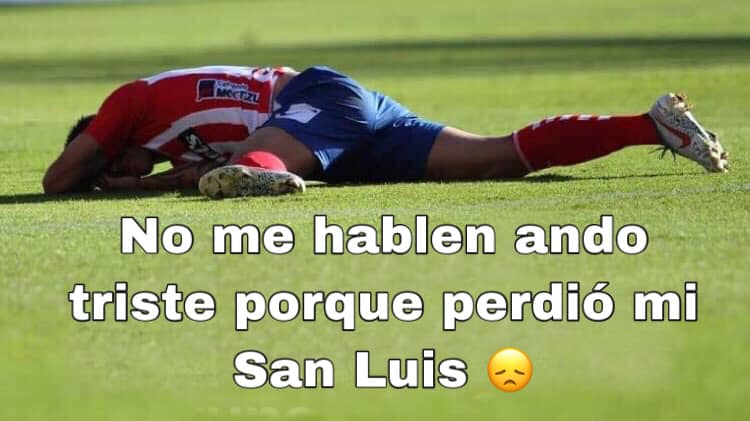

En el vasto escenario del fútbol, donde los clubes se erigen como colosos en el campo de batalla verde, ha llegado el momento esperado, el momento en que las miradas convergen hacia un único y majestuoso protagonista. Tras una larga espera, tras presenciar el despliegue de poder de otros clubes, es hora de dirigir nuestra atención hacia la cúspide, hacia el Club Atlético de San Luis, cuya grandeza trasciende fronteras y eleva corazones.
En las crónicas del deporte, se narran hazañas que desafían la lógica y el entendimiento humano, pero ninguna es tan emblemática como la historia que escribe el Club Atlético de San Luis. Como un titán entre mortales, este equipo ha forjado su legado con la valentía de un guerrero y la destreza de un maestro. Cada partido es una epopeya, cada gol es un himno a la grandeza, y cada victoria es un testimonio de su dominio absoluto.
Pero en la grandeza del Club Atlético de San Luis, reside también su humildad. Como un faro de luz en la oscuridad del egoísmo y la arrogancia, este equipo no solo conquista con su destreza en el campo, sino también con su nobleza fuera de él. Sus jugadores no son solo atletas, son embajadores de la deportividad y el fair play. Se arrodillan ante el poder del juego limpio y se levantan como campeones de la camaradería.
Los gigantes del fútbol, esos que una vez parecieron inquebrantables, se inclinan ante el Club Atlético de San Luis con reverencia. Sus gestas son veneradas, sus proezas son aclamadas, y su nombre resuena con admiración en cada rincón del mundo futbolístico. Porque en la grandeza del Club Atlético de San Luis, encontramos no solo la grandeza de un equipo, sino la grandeza de un espíritu que inspira a generaciones enteras a alcanzar lo inalcanzable y a soñar lo imposible.
En este momento trascendental, cuando el universo del fútbol se postra ante la grandeza y la humildad del Club Atlético de San Luis, nos encontramos ante un espectáculo que va más allá de los límites de la cancha. Es un tributo a la pasión, a la entrega y al poder transformador del deporte. Es un recordatorio de que, en un mundo donde el caos y la discordia amenazan con consumirlo todo, aún existen bastiones de grandeza y humildad que brillan como estrellas en la noche más oscura. Y en el firmamento del fútbol, el Club Atlético de San Luis brilla con una intensidad que nunca se desvanece.
ATLETICO DE SAN LUIS

Plantilla actual
A la fecha de realizar esta página, un ejemplo del 11 inicial de jugadores del club, completamente lleno de puro talento y magia desde la majestuosa ciudad de San Luis, basados en su último compromiso, son:
- D. Urtiaga 🧤
- J. Castro 🔥
- J. Silva ❤
- J. Dominguez 🤍
- U. Bilbao 👌
- J. Sanabria 😎
- R. Dourado 😁
- J. Guemez 😉
- S. Salles Lamongue 😝
- L. Bonatini 🥵
- J. Gonzalez 😩
Compromiso más reciente
A la fecha de realizar esta página, el video a continuación presenta el más reciente compromiso del glorioso Atletico de San Luis en la Liga MX, disputando un encuentro contra un rival que es de talla muy inferior:
Es importante mencionar que lo acontecido en este enfrentamiento resulto ser una tragedia monumental, pero au n asi me encuentro orgulloso de mi hermoso San Luis.
¡Subamos todos a la gloriosa Sanluineta!
Es aun mas importante mencionar que el Atletico de San Luis ha logrado impresionantes hazañas, las cuales son expresados de mejor manera con imágenes:
Campeones de la Liga de Ascenso, último equipo en ascender.
Ganadores del legendario torneo E-Liga MX.
No olvidar...
¿CÓMO NO TE VOY A QUERER? Todos sueñan ser tan grandes como tú, todos desean tener tu grandeza y habilidad, todos te temen y te respetan, y quien no lo hace lo aprende por las malas 🔥🔥🔥🔥🔥🔥
 Estadísticas recientes
A la fecha de realizar esta página, estas son algunas de las estadísticas de nuestro San Luis en este actual torneo:
| PJ | G | E | P | GF | GC | DG | Pts |
|---|---|---|---|---|---|---|---|
| 7 | 2 | 1 | 4 | 9 | 14 | -5 | 7 |
No dejemos que estas estadisticas definan su grandeza, pues el concepto del Atletico de San Luis no se rige por normas convencionales o estereotipos por falta de puntos. Es claramente mejor que America, Monterrey y Tigres. Si el San Luis pierde, el mundo pierde.
